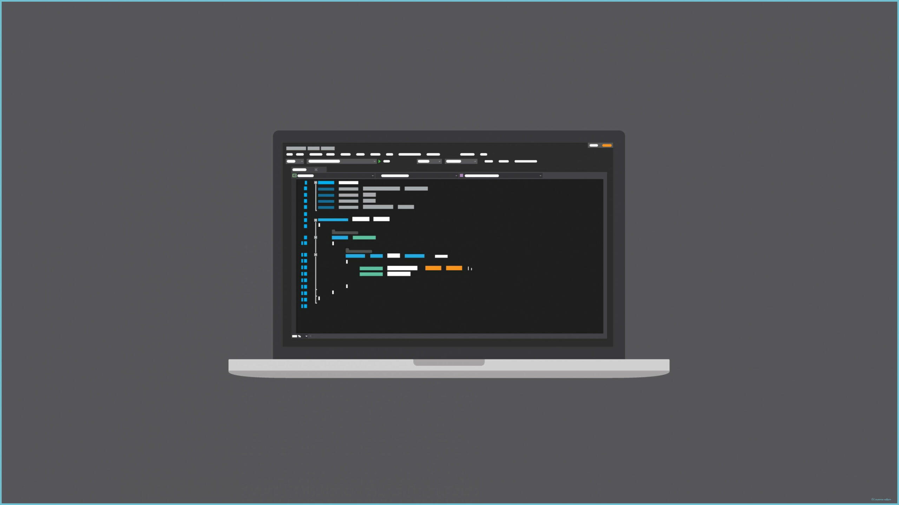

PORTFOLIO


Hola, soy Leandro Saracco. Un apasionado de la arquitectura de software, liderando técnicamente una consultora de 100 a 120 empleados. Aunque tengo formación como docente, en la actualidad me dedico exclusivamente a impartir capacitaciones, enfocándome en la excelencia técnica y la innovación en diversos proyectos. Fomento un ambiente colaborativo y motivador para lograr resultados excepcionales. Siempre en búsqueda de nuevos retos para seguir creciendo y aportar mi experiencia en proyectos tecnológicos significativos.
Tecnicatura Superiror cuyos objetivos son el análisis, programación e implementación de software, organización y programación de sistemas informáticos, o como administrador de bases de datos. También, el profesional puede ejercer de manera independiente a través de consultorías o liderando grupos de trabajo.
Licenciatura impulsada por avances tecnológicos, revolucionada por diversas actividades y abordada por problemas complejos con innovación. Con el crecimiento de Internet y la conectividad, se amplían las aplicaciones y la investigación en Ciencia de Datos. Al ser transversal a múltiples disciplinas, su campo profesional es deslocalizado y tiene una creciente demanda de formación científico a nivel nacional e internacional.
Fui ayudante de cátedra de las materias:
Fui titular de cátedra de la materia EDI UX/UI en donde se fundamentaba:
"Se pretende que la cátedra sea un complemento esencial para la formación del alumno y
articule con
otras materias de la carrera, como por ejemplo Programación I y Metodología de la
Investigación,
colaborando y trabajando en la horizontalidad de los contenidos; logrando además ayudar
con
el
andamiaje que necesita el futuro Analista Programador para el desarrollo
eficaz/eficiente de
los
sistemas que se le pidan: El desarrollo de software pensado y enfocado desde un
principio
con
metodologías de UX (User Experience) tendrá como resultado un sistema o solución que
satisface al
cliente en todo sentido."
Actualmente estoy desempeñando tareas de Arquitectura, SRE y desarrollo FullStack bajo metodologías ágiles según equipo. Tengo a cargo 5 personas y suelo dar soporte en cuestiones técnicas a cualquier equipo de la consultora. Dada una necesidad, suelo investigar autónomamente y luego dar capacitaciones si es necesario.
Diseño, desarrollo y mantenimiento de aplicaciones web y sistemas informáticos utilizando tecnologías Java en el BackEnd. Trabajé con frameworks y librerías relacionadas con Java, bases de datos SQL y NoSQL. En cuanto al FrontEnd, trabajé con frameworks como Angular y React, utilizando Javascript o TypeScript. Colaboraba con equipos multidisciplinarios, implementaba funcionalidades, optimizaba el rendimiento y resolvía problemas técnicos para lograr soluciones completas y funcionales.
Brindaba soporte a los usuarios de diferentes oficinas del municipio con el fin de solucionarle problemas tanto de Hardware como de Software. Los problemas que más se me presentan por lo general son: